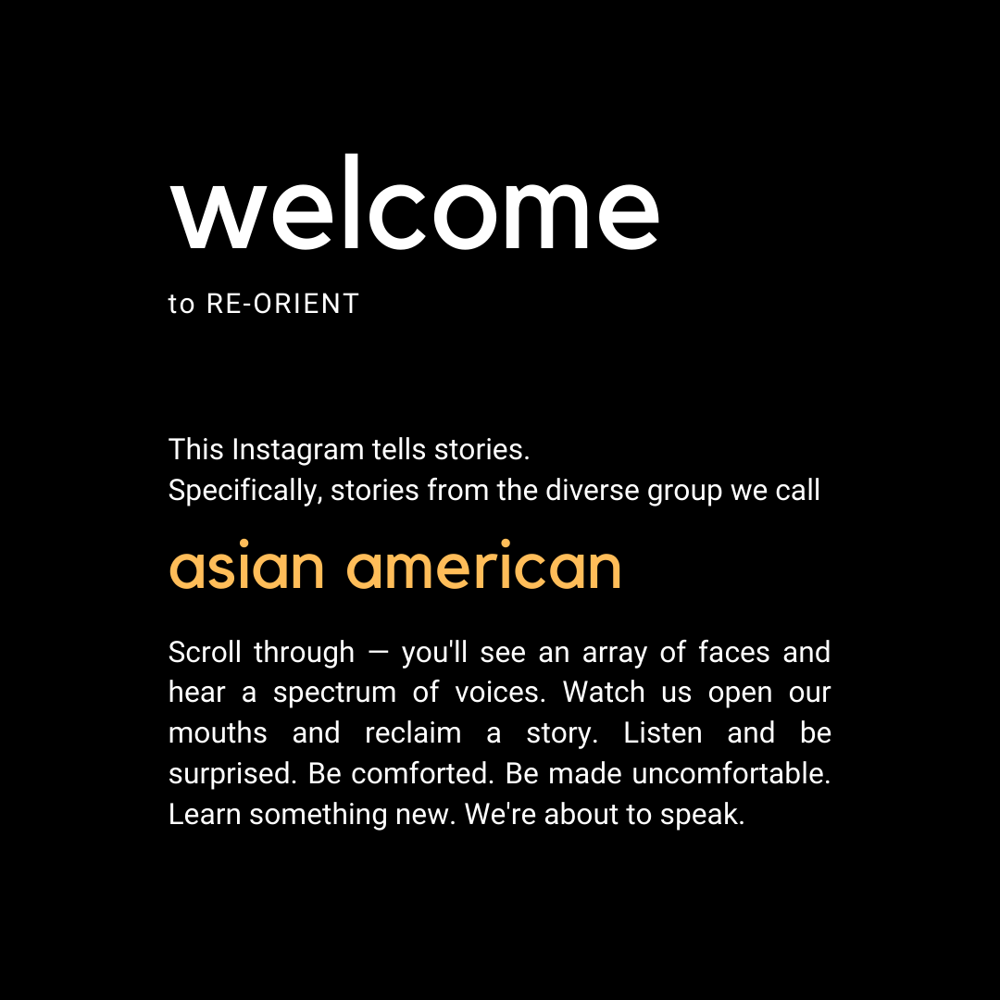
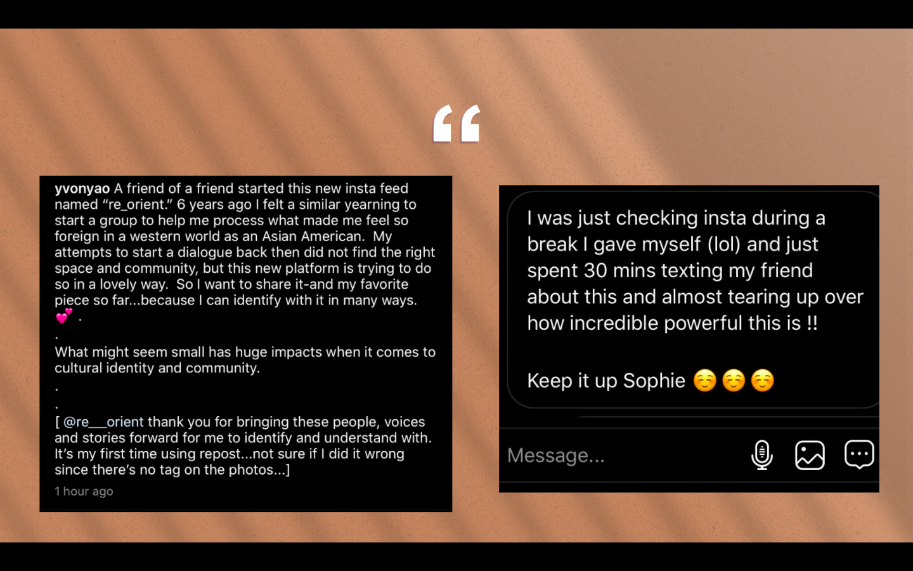
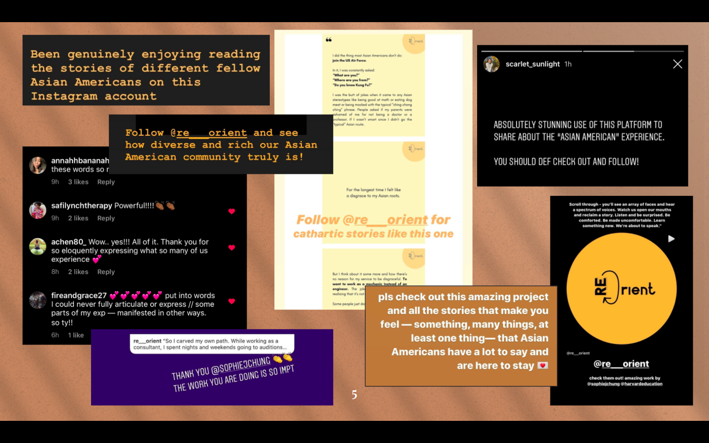

re-Orient: “Asian Americans, story by story”
Link to site: https://www.instagram.com/re___orient/
re-Orient is a space maintained on Instagram that features a variety of diverse stories from ethnic Asian young adults living in the United States. These stories aim to provide a more multifaceted portrait of what is often seen as the “Asian” monolith in this country. From featuring actresses and media influencers to Air Force mechanics, medical students, poets, and refugee activists, re-Orient asks probing questions, hoping to empower Asian American youth to articulate the realities of being ethnically Asian in the U.S. and asking those who are not ethnically Asian to consider what this community has to voice.
The media project was formally pitched at the Harvard Graduate School of Education in Spring 2020, under the mentorship of Professor Joe Blatt.
Below is the project’s official educational mission and target audience:
I interviewed over 25 Asian American young adults and youth who were willing to participate in the project to feature their stories by way of designed photo essays. I also produced a short and documentary-stylized video featuring an Asian American youth activist with the intent of empowering and equipping Asian American youth with working vocabulary and concepts to articulate self - such as the model minority myth, the birth of the term “Asian American” during the Civil Rights movement, and novel ideas of belonging in the face of increasing globalization.
I was the sole director of this project and followed a production timeline as such:
Research → Report + Pitch → Feedback → Iteration → Production → Formative Evaluation → Iteration → Production → Iteration → Presentation → Future Scope
Throughout the course of this media project, I was able to develop my skills in:
- People management: interviewing, discussing, compromising, collaborative editing
- Research: finding evidence for this project’s existence and mission, presentation
- Production: scripting, filming, editing with Adobe Premiere Pro, drawing overlays and decorative elements with Procreate, asset organization, designing with Canva and Adobe Illustrator, timeline management, recruiting, social media management
- Evaluation: testing with target audience, implementing feedback, iterating
Reponse: The community response to this project has been incredibly encouraging and plentiful. Below are a few snapshots of the messages and reposts I’ve seen in the short time span since I launched this project in April 2020:
 